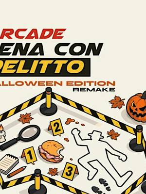

Game tournaments and nights in Turin
Card and chess tournaments, board game nights, role-playing games and treasure hunts in Turin and around.
Search all workshops5 activities coming up · updated on 9 November 2026
- wed11novGamesLiterary Speed Date: meeting through booksWednesday 11 November, 18:30Candiolo (TO) · Freewith Pagina37

fri13novGamesMurder mystery dinner: a Halloween caseFriday 13 November, 20:00–23:30Lingotto (TO) · 20 €with Arcade- fri27novGamesAperiCrime: who killed Cinderella?Friday 27 November, 19:15–21:00Crocetta (TO) · 25 €with Aula44
- dateto be confirmedOtherCascina Roccafranca: this season’s coursesDate to be confirmedMirafiori (TO)with Cascina Roccafranca
- everythuGamesChess in the Garden: outdoor gamesEvery Thursday, 17:00San Salvario (TO)with Alfiere Campoverde at Casa del Quartiere di San Salvario